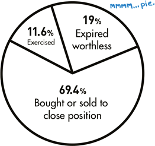

Cashing out your Options
So, you’ve bought or sold an option to open a long or short position. What now?
Option outcomes: Calendar year 2008
Source: Options Clearing Corporation
Some beginning option traders think that any time you buy or sell options, you eventually have to trade the underlying stock. That’s simply not true. There are actually three things that can happen.
- You can buy or sell to “close” the position prior to expiration.
- The options expire out-of-the-money and worthless, so you do nothing.
- The options expire in-the-money, usually resulting in a trade of the underlying stock if the option is exercised.
There’s a common misconception that #2 is the most frequent outcome. Not so. Outcome #1 is actually the most frequent. That’s why it makes so much sense that we listed it #1.
If you have a trade that’s working in your favor, you can cash in by closing your position in the marketplace before the option expires. On the other hand, if you have a trade that’s going against you, it’s OK to cut and run. You don’t necessarily have to wait until expiration to see what happens.
The fact that option contracts can be opened or closed at any given point prior to expiration leads us to the mysterious and oft-misunderstood concept called open interest.
Today's Trader Network
|
All-Star Trade Report |
Options Guy Blog |
Videos, webinars and more |